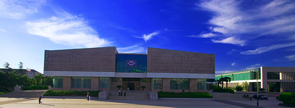
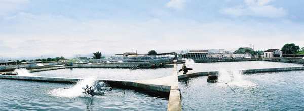

盐 城 概 况
盐城是一座历史悠久、人文荟萃的城市。盐城位于黄海之滨，地处长江三角洲北翼，至今已有2100多年历史，是全国唯一以盐命名的地级市，海盐文化是这里的文化。有全国唯一展示海盐文明的中国海盐博物馆和国家AAAA级海盐历史文化景区。

盐城曾是一方红色圣地，“陕北有个延安、苏北有个盐城”，是华中敌后抗日根据地的政治、军事和文化中心，新四军纪念馆被列入全国100个“红色旅游经典景区”和30条“红色旅游精品线路”。
盐城是一座生态独特、资源丰富的城市。市域面积1.7万平方公里，户籍人口816万，是江苏面积第一、人口第二的城市，拥有全省最长的海岸线、最大的沿海滩涂、最广的海域面积。这里是丹顶鹤的家园、麋鹿的故乡，世界野生丹顶鹤和麋鹿种群数的60%和33%生活在这里，是联合国教科文组织“人与自然生物圈”成员单位，成功纳入世界重要湿地名录。

盐城是一座产业兴旺、快速发展的城市,建市30多年来，盐城经济建设、社会发展和城市面貌都发生了巨大变化。盐城也是一座开放包容、充满活力的城市。人流、物流、资金流、技术流、信息流在这里集聚与辐射，盐城的发展充满生机与活力。（图为国家示范基地-诏安金都海洋生物产业园）